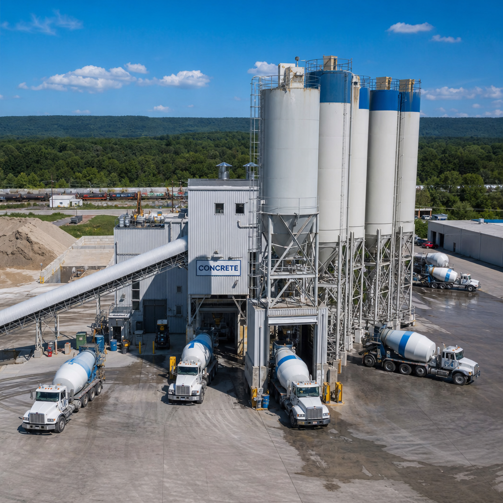

天桥区作为济南市重要的工业和物流基地，聚集了大量制造业企业、物流园区和住宅项目。济南钧华商砼在天桥区设有专业服务点，为北园大街、济泺路、无影山等区域的建筑工程提供快速、优质的混凝土配送服务。本文将详细介绍天桥区混凝土供应的各个方面，帮助工程方做出最佳选择。

一、天桥区建筑市场概况
天桥区位于济南市北部，是济南传统的工业强区。近年来，随着城市更新和产业升级，天桥区的建筑业蓬勃发展。主要建设项目包括：
- 北园大街沿线改造：道路拓宽、商业综合体建设
- 济泺路片区开发：住宅小区、配套设施建设
- 无影山区域更新：老旧小区改造、市政设施升级
- 蓝翔路工业园：标准厂房、仓储物流设施建设
- 泉胜物流园区：大型物流中心、配送基地建设
这些项目对混凝土的需求量大、要求高，需要供应商具备强大的供应能力和专业的服务水平。
🏭 天桥区核心服务区域
- 北园大街全线（历黄路至生产路段）
- 济泺路沿线（火车北站至黄河大桥段）
- 无影山中路及周边社区
- 蓝翔路工业园区
- 泉胜物流园区
- 药山片区开发区域
- 桑梓店化工产业园
二、我们的服务优势
⚡ 快速响应，准时送达
我们在天桥区周边设有调度中心，配备8台专用搅拌运输车，确保能够快速响应客户需求。从天桥区搅拌站到北园大街沿线工地，平均配送时间仅需25-40分钟，远优于行业平均水平。
承诺时效：
- 北园大街沿线：25-35分钟
- 济泺路沿线：30-40分钟
- 无影山区域：25-35分钟
- 蓝翔路工业园：35-45分钟
- 其他区域：40-60分钟
🎯 精准调度，避免拥堵
北园大街是济南市交通主干道，早晚高峰车流量大。我们的调度团队熟悉天桥区所有道路情况，能够根据实时交通状况优化运输路线，避开拥堵路段，确保混凝土准时到达施工现场。
智能调度系统特点：
- 实时监控交通状况
- 动态调整运输路线
- 多车协同作业
- 应急预案完善
🔧 技术支持，全程服务
我们拥有专业的技术服务团队，可为天桥区的工程项目提供全方位的技术支持：
- 配合比优化设计
- 现场技术指导
- 质量问题诊断
- 施工方案建议
三、服务范围详解
1. 北园大街沿线服务
北园大街是天桥区的核心主干道，沿线分布着众多商业项目和住宅楼盘。我们为以下重点区域提供优先服务：
| 路段 | 主要项目类型 | 配送时效 | 特色服务 |
|---|---|---|---|
| 历黄路-联四路段 | 商业综合体、写字楼 | 25-30分钟 | 夜间施工支持 |
| 联四路-生产路段 | 住宅小区、学校 | 30-35分钟 | 小批量多批次 |
| 生产路以西 | 工业园区、仓储 | 35-40分钟 | 大体积浇筑 |
2. 济泺路沿线服务
济泺路连接济南火车站北广场和黄河大桥，是天桥区重要的南北向通道。沿线以住宅项目和市政设施为主。
服务特点：
- 靠近黄河大桥，服务北部新区建设项目
- 紧邻火车北站，交通便利但需注意交通管制
- 住宅小区密集，需协调好施工时间和噪音控制
- 市政项目较多，需要配合政府工程进度
3. 无影山区域服务
无影山片区是天桥区的老城区，近年来进行了大规模的城市更新。我们以老旧小区改造项目为重点服务对象。
专项服务：
- 小批量精准配送（最小5m³起订）
- 狭窄道路通行方案
- 居民区施工协调
- 快速修补混凝土供应
4. 工业园区服务
蓝翔路工业园、泉胜物流园区等工业区域对混凝土有特殊要求，我们提供定制化解决方案：
- 厂房地坪混凝土：耐磨、抗压、平整度高
- 仓储地面混凝土：重载、耐冲击
- 道路硬化混凝土：快干、强度高
- 基础工程混凝土：大体积、低水化热
四、产品规格与价格
| 标号 | 参考价格（元/m³） | 适用场景 | 最小订购量 |
|---|---|---|---|
| C25 | 380-410 | 基础垫层、次要结构 | 5m³ |
| C30 | 420-450 | 普通梁板柱、住宅主体 | 5m³ |
| C35 | 460-490 | 高层建筑、商业项目 | 8m³ |
| C40 | 500-540 | 大跨度结构、工业地坪 | 10m³ |
| C45及以上 | 面议 | 特殊工程需求 | 面议 |
* 以上价格为天桥区参考价，实际价格根据工程量、付款方式、运输距离等因素有所调整。
* 大批量订单（单次100m³以上）可享受优惠价格。
* 长期合作客户可签订年度框架协议，锁定优惠价格。
五、配送流程
- 电话咨询：拨打18668933108，告知工地位置、混凝土标号、预计用量
- 路线规划：技术人员根据工地位置规划最优运输路线
- 合同签订：确认价格、付款方式、配送时间等细节
- 生产安排：提前1天预约，安排生产计划
- 准时发车：按约定时间从搅拌站发车
- 实时跟踪：GPS定位，客户可随时了解车辆位置
- 现场验收：检测坍落度，制作试块，签收确认
- 售后跟踪：24小时质量跟踪服务
六、质量控制体系
我们严格执行国家标准和行业规范，确保每一批次混凝土的质量：
原材料把控
- 水泥：选用山东山水、中联等大品牌产品
- 骨料：来自正规采石场，粒径、级配符合标准
- 外加剂：使用知名品牌减水剂，提高混凝土性能
- 每批原材料进场前必须检验合格
生产过程监控
- 全自动配料系统，精度误差小于1%
- 搅拌时间严格控制，确保均匀性
- 每盘混凝土都有生产记录
- 实验室实时监测混凝土性能
出厂检测
- 每车必检坍落度
- 按规定频率制作试块
- 出具质量检测报告
- 不合格产品严禁出厂
七、常见问题解答
Q1：天桥区最小订购量是多少？
A：一般情况最小订购量为5m³。对于无影山等老城区的小规模修补工程，我们可以提供更小批量的配送服务，具体请咨询客服。
Q2：能否保证准时送达？
A：我们承诺按照约定时间送达。如遇特殊情况（交通事故、极端天气等）可能延误，会提前通知客户并协商解决方案。正常情况下，准时率达到95%以上。
Q3：北园大街高峰期堵车怎么办？
A：我们有多种应对措施：①提前规划路线，避开拥堵路段；②灵活调整发车时间；③必要时启用备用路线；④与客户沟通调整浇筑时间。
Q4：可以提供夜间配送服务吗？
A：可以。我们提供24小时服务，但夜间施工需要提前办理相关手续，并注意噪音控制，避免扰民。
Q5：如何支付货款？
A：支持多种支付方式：现金、银行转账、支票等。长期合作客户可申请月结或季度结算，具体条款面议。
Q6：混凝土质量有问题怎么办？
A：我们提供完善的售后服务。如发现质量问题，请立即联系我们（18668933108），技术人员会在2小时内到达现场处理。确属我方责任的，承担相应损失。
八、成功案例
案例1：北园大街某商业综合体项目
项目概况：总建筑面积8万平方米，地下2层，地上20层
服务内容：提供C30-C40各标号混凝土，累计供应1.2万m³
服务亮点：连续3个月每天配送，高峰期同时服务3个作业面，零延误、零投诉
案例2：济泺路某住宅小区项目
项目概况：6栋高层住宅，总户数800户
服务内容：主体结构混凝土供应，累计8000m³
服务亮点：小批量多批次配送，配合施工进度灵活调整，获得开发商好评
案例3：蓝翔路工业园厂房建设
项目概况：5栋标准厂房，单栋面积5000m²
服务内容：地坪混凝土专项供应，累计6000m³
服务亮点：提供耐磨地坪专用配合比，平整度达到高标准要求
📞 天桥区混凝土服务热线
无论您在北园大街、济泺路还是无影山，我们都能快速送达
服务时间：周一至周日 6:00-22:00（24小时应急服务）
服务承诺：30分钟响应 | 准时送达 | 质量保证 | 售后无忧
结语
天桥区作为济南市北部的重要发展区域，建筑业持续繁荣。济南钧华商砼凭借多年的本地服务经验、完善的配送网络和优质的产品质量，已成为天桥区众多工程项目的首选混凝土供应商。
无论您是大型商业综合体、住宅小区，还是工业厂房、市政工程，我们都能为您提供专业、高效、可靠的混凝土供应服务。欢迎随时联系我们，获取免费的技术咨询和报价服务。
选择济南钧华商砼，选择放心、选择专业、选择效率！
📍 天桥区服务覆盖：
北园大街 | 济泺路 | 无影山 | 蓝翔路 | 泉胜物流园 | 药山片区 | 桑梓店
☎️ 24小时热线：18668933108